Simple Cyclotomic Matchstick Polygons Using Turtles, Snakes and Rats
Table of Contents
Introduction
A while ago I wanted to build a tool that allows you to play around with tiles and do some computational experiments. Little did I know, as I entered a rabbit hole going deep into pure mathematics, rediscovering cyclotomic rings (part 1) and learning how to work with them. A major milestone was the ability to check two line segments in such a ring for intersections (part 2). In this third part of the series, I present the main ideas of my experimental 2D geometry framework tilezz, which is focused on an accessible interface for simple polygonal tiles over cyclotomic rings.1
In this (rather technical) post, I am going to dive more into the key concepts behind the implementation. If you are not interested in theory and just want to experiment with drawing tiles or generating patches, you may want to head straight to the crate documentation, where I wanted to focus more on practical aspects such as drawing polygons in a Jupyter notebook. For a live demo, check out the Rat Explorer web app, which is based on the library.
The Cyclotomic Animals
Turtles Producing Snakes
As explained in the previous post, if you extend $\mathbb{Z}$ by a root of unity, and close this under multiplication, you get all multiples $\zeta_n^k = e^{2\pi i k / n}$ for $k = 0,…,n$ which gives you a discrete set of points around the circle, all multiples of some smallest undivisible base angle. We interpret each root as a unit step vector in the complex plane. This set of unit step vectors encodes all allowed movement directions. The roots with multiplication are isomorphic to the cyclic group $\mathbb{Z}_n$, which can be identified with our discrete angle addition algebra:

We identify each vector with a symbol in $\Sigma_n := \{0, 1, -1, …, 5, -5, \mathsf{hturn} \}$, where $\mathsf{hturn}$ is $\pm \frac{n}{2}$, i.e. the unique half turn angle. Depending on context, a symbol in $\Sigma_n$ denotes either some angle $a\in\mathbb{Z}_n$ or a unit step vector $v\in\mathbb{Z}[\zeta_n]$. $\mathbb{Z}_n$ is embedded in $\mathbb{Z}[\zeta_n]$ by mapping each group element to a root of unity, which we identify with our symbolic angles via $\mathsf{unit}(k) : \Sigma_n \to \mathbb{Z}[\zeta_n]$ defined by $k \mapsto \zeta^k_n$.
A turtle is an oriented point, i.e. a pair $(p, a)$ where
- $p \in \mathbb{Z}[\zeta_n]$ is a ring element defining a 2D position in the plane, and
- $a \in \Sigma_n$ is a step vector represented by a symbolic angle (current direction).
Each symbol in $\Sigma_n$ can also be interpreted as an action on a turtle, consisting of a rotation that is followed by a unit step, e.g. in $\mathbb{Z}[\zeta_{12}]$2 the symbolic angle $0$ means a step forward, $\mathsf{hturn} (= \pm 6)$ means half a turn, then a unit step, and $3$ means a quarter turn left, then a step.
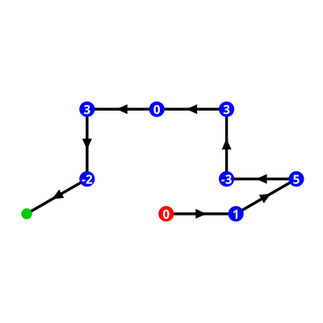
A snake is a sequence $s \in \Sigma_n^*$ and can be interpreted as movement instructions for a turtle. Given a turtle $t := (p, a)$ and a symbol $k \in \Sigma_n$, the next turtle state $t’$ is obtained as follows: rotate $k$ times by the minimal angle of the ring, then move a single step in the new facing direction. So the resulting state is
$$t’ := (p + \mathsf{unit}(a)\cdot \mathsf{unit}(k), \mathsf{unit}(a) \cdot \mathsf{unit}(k))$$
Conceptually, a snake is a symbolic blueprint for a polyline. Evaluating it with a turtle produces a concrete unit-length segment chain. Each turtle uniquely determines one possible geometric realization in the cyclotomic plane. Thus, each snake defines an equivalence class of polylines in that plane, and the polyline produced from the canonical turtle (0, 0), i.e. a turtle located at the origin and looking in the direction of the positive real axis, is a canonical representative of that class. This representative is required for geometric checks, such as closure or self-intersection.
How Ouroboros Turns Into A Rat
A snake whose canonical polyline forms a simple closed polygon is called a rat (“rational tile”), because all lengths of straight edges can be decomposed into unit steps. Similarly to snakes, rats are equivalence classes of (a restricted subset of) simple matchstick polygons.
While we think in terms of turtles and snakes, each angle can be seen as a turning angle, i.e. how much the turtle deviates from the current “forward” direction for the next step. But the moment the turtle reaches its original starting point, i.e. the snake bites its own tail and becomes a rat, something subtle happens.
The very first angle of the sequence was “forward” with respect to some unspecified starting direction. When we close the polygon, we typically reach the original position at a different angle. When building a snake on the fly, this angle is not known in advance, so the first angle of a snake is arbitrary.
We need to fix up our turtle turning angles so they become equivalent to proper external angles of the resulting polygon. The sum of external angles of a simple polygon is always a full turn, but the same polygon boundary can be traced out clockwise or counter-clockwise, so there are often two distinct rats for each such polygon. For example, a unit square over $\mathbb{Z}[\zeta_{12}]$ can be described by [3,3,3,3] (on the left), but also by [-3, -3, -3, -3] (on the right, note the edge directions).
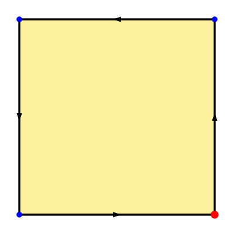
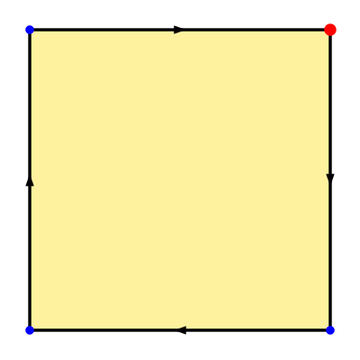
This means that the sum of all angles of a valid rat over $\mathbb{Z}[\zeta_n]$ must sum to $n$ or $-n$, and whenever an open segment sequence (snake) closes into a polygon (rat), we must fix the first angle in the unique valid way.
For example, the sequence [0,3,3,3] also traces out a square as a snake, but the first angle is not correct, and we can infer the correct value as 12-9 = 3, getting a valid closed sequence.
We break the symmetry by saying that the counter-clockwise orientation is canonical, requiring that the sum of these external angles is positive, and thus that all polygons are CCW-oriented.
The next issue is that in the case of rats, we ultimately get cyclic strings, and we do not want to distinguish polygons that only differ in our vertex labelling, i.e. where you start tracing its boundary. The solution is simple: after fixing orientation, we consider the unique lexicographically minimal cyclically shifted string, which can be efficiently computed using e.g. Booth’s algorithm.
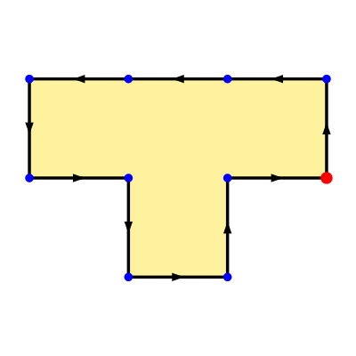
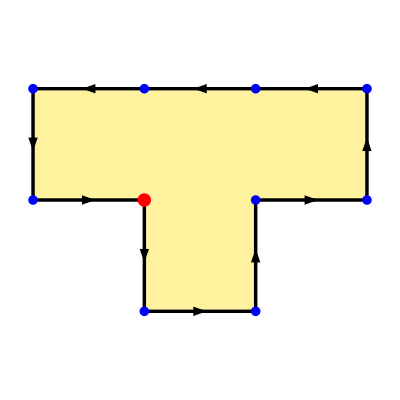
For example, the left T-tetromino with the sequence [3,3,0,0,3 3,-3,3,3,-3] is not canonical, whereas the right one with the sequence [-3,3,3,-3,3,3,0,0,3,3] is.
With these simple restrictions applied, we now have a unique representation of a simple polygon that is invariant under:
- translation and rotation in the plane (due to coordinate-free semantics)
- orientation and cyclic shifts of the angle sequence (by canonicalization)
Symmetries of Rats
Given the canonical representation, we can classify two intrinsic symmetries of rats:
- chirality: is it the same polygon if we reverse the sequence?
- rotation: is it the same polygon if we cycle angles by some fixed offset?
A rat with angle sequence $s$ is chiral iff $\mathsf{lexmin}(s) \neq \mathsf{lexmin}(\mathsf{reverse}(s))$, otherwise it is achiral. Furthermore, let $k$ be maximal such that $s = w^k$ for some string $w$. If $k > 1$, the rat has $k$-fold rotational symmetry.
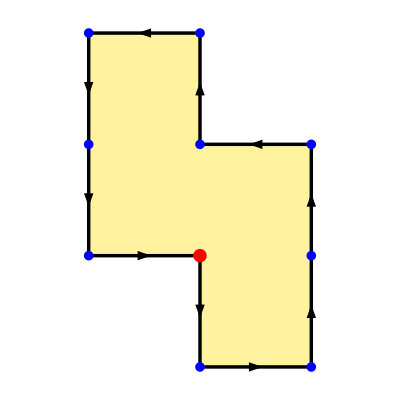
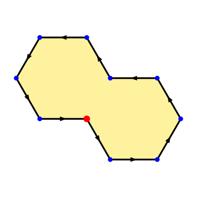
For example, the T-tetromino is achiral and has no rotational symmetry, the S-tetromino (left) with the sequence [-3,3,3,0,3,-3,3,3,0,3] is chiral and has 2-fold rotational symmetry, and the bi-hex (right) with the sequence [-2,2,2,2,2,-2,2,2,2,2] also has 2-fold rotational symmetry, but is achiral (which you can check as an exercise).
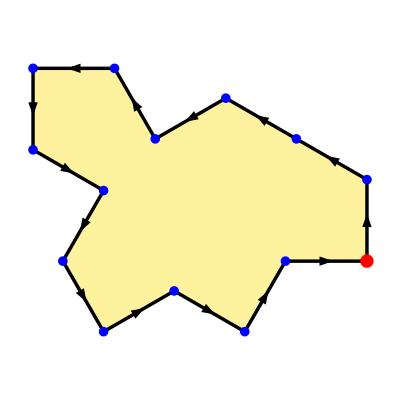
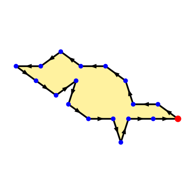
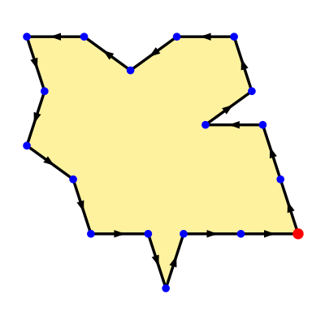
The formalism is more expressive than classical grid tiles. For example, you can build the spectre monotile over $\mathbb{Z}[\zeta_{12}]$ (left) and the Penrose rhombus tiles over $\mathbb{Z}[\zeta_{10}]$ (center + right). Note that for the rhombs, the required matching constraints are encoded geometrically3, whereas for the Spectre this is not necessary, as the Spectre only needs its decorations to formally eliminate the possibility that it tiles with its own chiral reflection.
Matching Boundaries
The involution of a boundary sequence is given by its reverse complement, i.e. we reverse the order of the symbols and flip their signs. For example, the sequences [1,2,3] and [-3,-2,-1] form an involutive pair.
Two partial boundaries $a_1\dots a_l$ and $b_l\dots b_1$ for some $l>0$ form a match seed. If $l>1$ or $a_1 = -b_1$, the match is given by a maximal reverse-complementary interval that contains the seed. If $l=1$ and $a_1 \neq b_1$, the match equals the seed (exceptional case explained below).
Note that extension must happen along both sequences in lock-step without disrupting existing matched angle pairings $\frac{a_i}{b_j}$, i.e. extending $\frac{a_1}{b_l}\frac{…}{…}\frac{a_l}{b_1}$ means prepending $\frac{a_0}{b_{l+1}}$ and/or appending $\frac{a_{l+1}}{b_0}$.
Two rats may only be glued along such maximal match intervals. This is one of the key requirements when we want to identify interfaces where tiles can be glued together to produce a valid larger tile. It is also the easier condition, since it is purely local.
Note that we cannot just cut out the matched sequences and glue the result, but we also need to adjust some angles. After cutting out the matched subsequences and concatenating the strings, the resulting sequence has the form $s’ = …a_0b_{l+1}…b_0a_{l+1}…$ and the angles $a_{l+1}$ and $b_{l+1}$ must be fixed as follows:
- $x := a_{l+1} + b_0 - \mathsf{halfturn}$
- $y := b_{l+1} + a_0 - \mathsf{halfturn}$
So the resulting sequence has the form: $x a_{l+2} … a_{-1} y b_{l+2} … b_{-1}$
Geometrically, the repaired angles are obtained by merging the two “turns” adjacent to the removed matching boundary, so one value is removed and the other one adjusted accordingly to get the correct angle at the next step away from a junction vertex between the distinct glued boundaries.
All of this is much easier to understand visually:
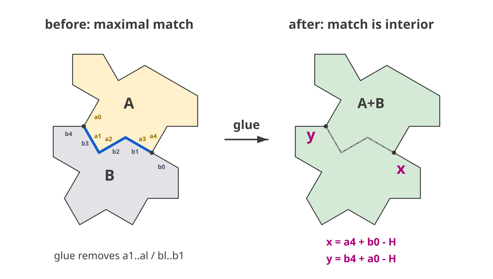
The special case for $l=1$ is necessary to handle cases such as e.g. gluing two squares ([3,3,3,3]) along a single edge - matching 3 against 3 would normally violate the reverse complementarity rule. At the same time, we also require maximality, because without it a formal glue operation (as a string rewriting) would incorrectly leave degenerate matched segments in the resulting sequence.
The key intuition is that any pair of edges of two rats can be used as a seed, and this seed uniquely determines a maximal edge-to-edge match between the boundaries. The geometric explanation for the $l=1$ exception is that matches assume edge-to-edge semantics, but geometrically the angles are best understood as external angles, which belong to the incident vertices.
These intuitions clash exactly in the case when we try matching along exactly a single edge, where “external angle” is not well-defined for any of the two vertices of that edge. So while it is useful to think that the reverse complementarity ensures that edge sequences match, geometrically the check is on the validity of inner vertices, i.e. vertices which become interior of the resulting polygon after a glue and do not appear on the boundary. In the case of a single edge match, there are no such inner vertices. So the actual geometric condition is that inside the matched boundary all vertices are glued to vertices with complementary external angle.
The final requirement for a valid match is that the tiles must not intersect anywhere outside the matching boundary, since otherwise the resulting shape would not be a simple polygon. This global constraint is why we need to compute segment intersections over cyclotomic rings, and why each glued sequence needs to be fully traversed and validated. So gluing is always at least linear in the total boundary size, even if the match itself is much shorter. So purely syntactic local gluing along maximal matches is a partial operation which can still fail due to global constraints.
Bringing Snakes and Rats To Life
In the previous section I introduced the most important concepts, but to bring them to life, it needs some more work and ideas to make it practical and efficient enough. Here I want to discuss some of the key aspects.
Maintaining Valid Snakes
As in many cases it is necessary to work with realized line segments, it is useful to store a snake as a combination of two lists – the list of angles, as described above, and a list of canonical polyline points (i.e., starting at the origin). This representation makes extending a snake by a single segment and checking whether it is closed a $\mathcal{O}(1)$ operation.
To ensure simplicity, we need to check that there are no self-intersections. As adding a new angle to a snake is a local operation and we know that all segments have unit length, this can be done very efficiently by combining a suitable segment intersection implementation with aggressive filtering of the segments.
For the filtering, the key insight is that a new segment only has to be checked against a small local neighborhood, which can be captured by bucketing all representative points into unit square grid cells. All intersecting segments must have at least one endpoint in the cell neighborhood of one of the endpoints of the fresh segment.4
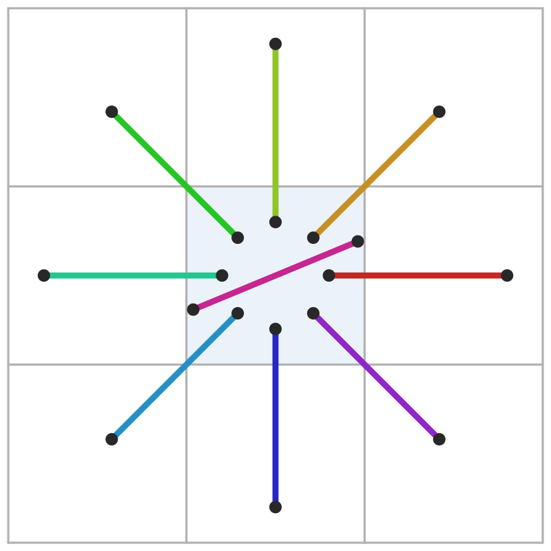
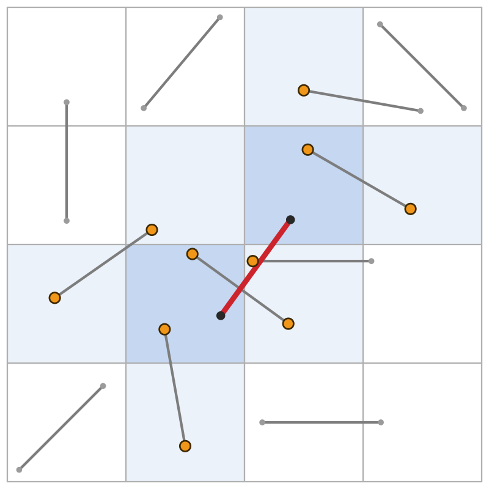
So in addition to the two lists, each snake also needs to carry a spatial square grid that tracks which unit square cells contain points of our segments. This reduces the number of needed intersection checks to almost a constant number per added segment, because in all practical cases the segments are very sparse in the grid, so you only need to check all segments touching these cells.
While the cyclotomic ring structure in general does support arbitrarily close points (as discussed in the first post), this requires an increasing number of unit steps to get there. One can construct adversarial segment chains with increasing length in order to place arbitrarily many segments into the same square cell5, but this just does not happen in practice.
Finding matches between tiles
When thinking about tiles and tilings, a question we care about is how we can assemble the pieces together, i.e. combine primitive tiles from some base set to larger patches.
As mentioned above, we can find matching candidate intervals along the boundaries of two rats by examining the boundary sequences. Because a “match” in our setting is not simply a substring query, it is better to think of our boundary strings to be like an abstraction of DNA strings. DNA has an alphabet $\Sigma={A,T,G,C} $ with the complementary pairs A-T and G-C, but the relevant part for string matching is only pointwise involution and sequence reversal, so we can reuse many algorithmic ideas from bioinformatics.
To find local boundary matches between rats with defined by sequences $s_1$ and $s_2$, the main trick is to first compute the reverse complement $\hat{s}_2$ of the second rat. Then, we duplicate both sequences to account for matches wrapping around our “cutting point” of the respective cyclic string and deduplicate equivalent cyclic matches later (matches not crossing the cut will be found twice).
So we build the sequence $s_1 s_1$ # $\hat{s_2}\hat{s_2}$ and use classical string algorithms and data structures (such as suffix trees or enhanced suffix arrays) to compute all the candidate matches efficiently. In a separate step, these can be validated by the glue procedure outlined above (on demand, or precomputed).
As the geometric check is still the most expensive part, we can pre-filter candidate matches by checking the edges at the junctions of the hypothetic glued boundary for intersections and reject early if we detect a violation. This can be implemented by looking at the same angles that are fixed during the glue procedure. We check the sign of $a_{l+1} + b_0$ and $b_{l+1} + a_0$ respectively:
- $\gt 0$: match is maximal and locally non-intersecting
- $= 0$: match is not maximal (could be extended), invalid
- $\lt 0$: edges adjacent to the match would intersect, invalid
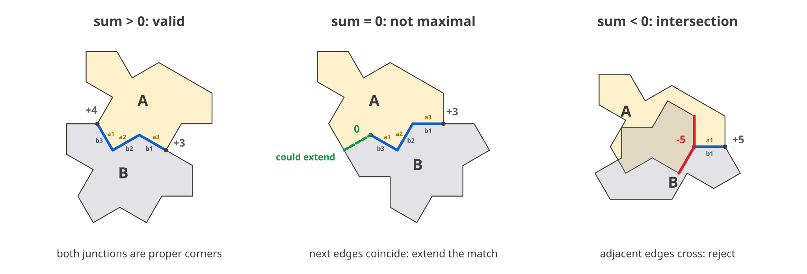
Summary
The machinery presented in this post can be summarized as (cyclic) string rewriting with geometric side constraints, where the latter are realized in cyclotomic rings. While this might look quite exotic, all of this naturally follows from the idea of describing polygon boundaries as strings over a fixed alphabet.
Discretizing angles and embracing unit-step edges makes such an encoding feasible, and the interpretation as a minimalistic turtle graphics formalism provides natural semantics. The intrinsic, embedding-independent description helps eliminating most symmetries, while the string-based nature enables the use of efficient classical string algorithms for analysis and manipulation of polygons.
Even though this approach cannot fully eliminate geometry, building on top of cyclotomic rings avoids all typical numerical issues haunting most geometry code and also provides combinatorial and algebraic structure that can be exploited for optimizations in polygon enumeration algorithms.
In fact, it works so well that I am currently in the final stages of collecting data to extend multiple OEIS sequences… But this is a story for another time!
-
I think that cyclotomic rings are underrated and should be popularized more. I hope my package can help spreading the love and show what these numbers can do in practice. ↩
-
Not only is $\mathbb{Z}[\zeta_{12}]$ computationally efficient, but it supports triangles, squares, hexagons and even the spectre tile, so it is my clear favorite! ↩
-
The geometric Penrose encoding technically does allow “slipped macroedge” matches, but it should not affect any actual valid tilings. Extending the formalism to allow complementary edges marked by pairs of opposite “charges” is just a plumbing exercise. It certainly would be a good optimization for more complex tile constructions, however it does not add anything interesting to the theory. The only thing that changes in the representation is that instead of raw angles encoded by $\Sigma_n$ we would need to add matching opposite charges, so the alphabet would become $\Sigma_n\times\mathbb{Z}$, where 0 would be the unique “neutral” edge color that matches with other neutral edges, whereas all edges marked with $i \neq 0$ only would match with complementary edges marked by $-i$. This is effectively a trade-off between constraint rigidity, perimeter length and alphabet complexity. ↩
-
This is stated here without proof (which is simple but tedious), however I think the illustrations should help convincing you that this is indeed the case. On the left you can see all the configurations how vertices of a segment can induce a cell neighborhood (which can be grouped in various ways by symmetry), while the right picture shows the most interesting diagonal case. The key argument is that a unit-length segment cannot “cross over” a unit square grid cell. So you cannot have both endpoints outside the respective neighborhood (consisting of the union of two $+$ shapes) and at the same time intersect the segment inducing that neighborhood. ↩
-
Proving this is actually not-trivial, so this topic definitely deserves a separate post I might write in the future. ↩